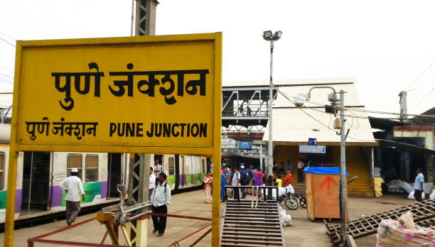

28,610 Pune Images and Stock Photos
View pune videos
Browse 28,610 authentic pune stock photos, high-res images, and pictures, or explore additional infosys pune or pune india stock images to find the right photo at the right size and resolution for your project.
Related searches:
of100NEXT